Facecheck Web / โปรเจกต์ Web ของทีม
ระบบเช็กชื่อผ่าน Web
ตัวอย่างการใช้งาน.
หน้าที่ของผมคือระบบตรวจสอบใบหน้าและพัฒนา Backend โดยใช้ Face Descriptor จาก face-api.js และ Spring Boot API สำหรับการเช็กชื่อและข้อมูลที่เกี่ยวข้อง พร้อมจัดเก็บใน PostgreSQL
ทั้ง 13 หน้าจอ React แสดงภาพรวมแอปพลิเคชันของทีมในส่วนของนักศึกษาและอาจารย์ โดยใช้ข้อมูล Demo ในเครื่อง และปิดกล้องในภาพหน้าลงทะเบียนใบหน้า
ภาพหน้าจอจากโหมด Demo ใช้ข้อมูลตัวอย่าง · หน้าลงทะเบียนใบหน้าปิดกล้องไว้ในการสาธิต
Login · เข้าสู่ระบบ
Student · นักศึกษา
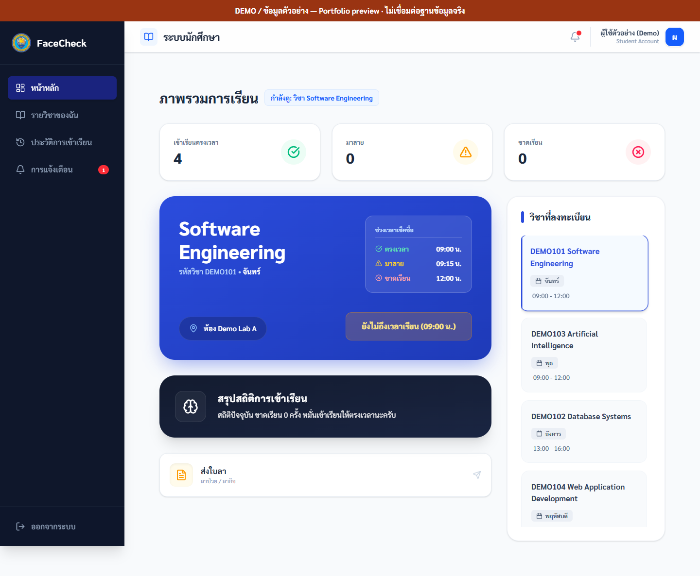
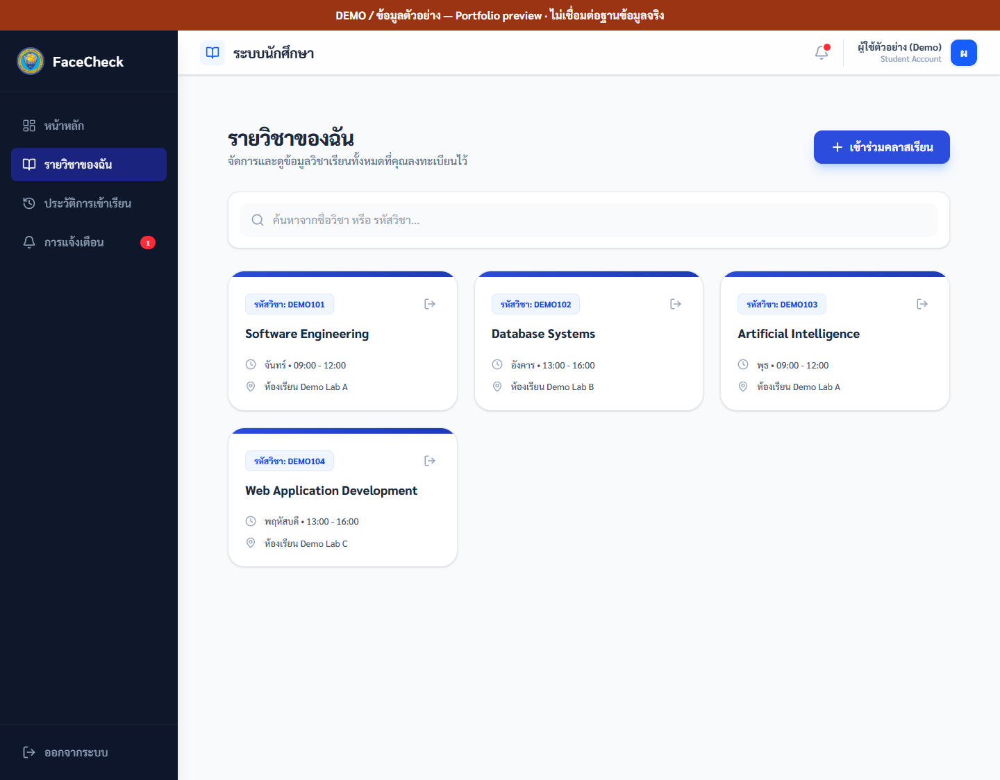
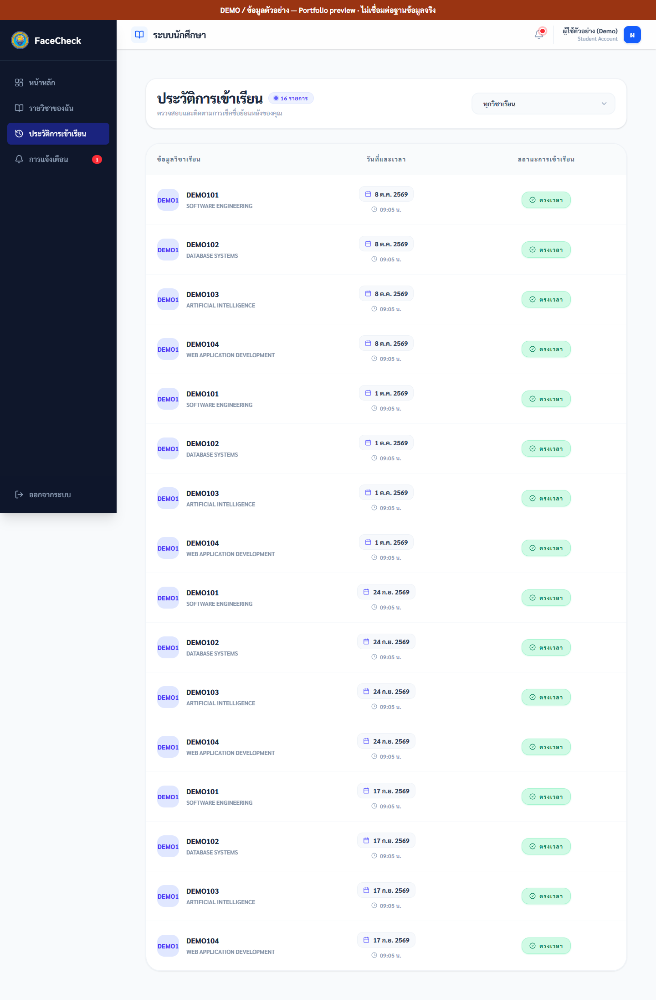
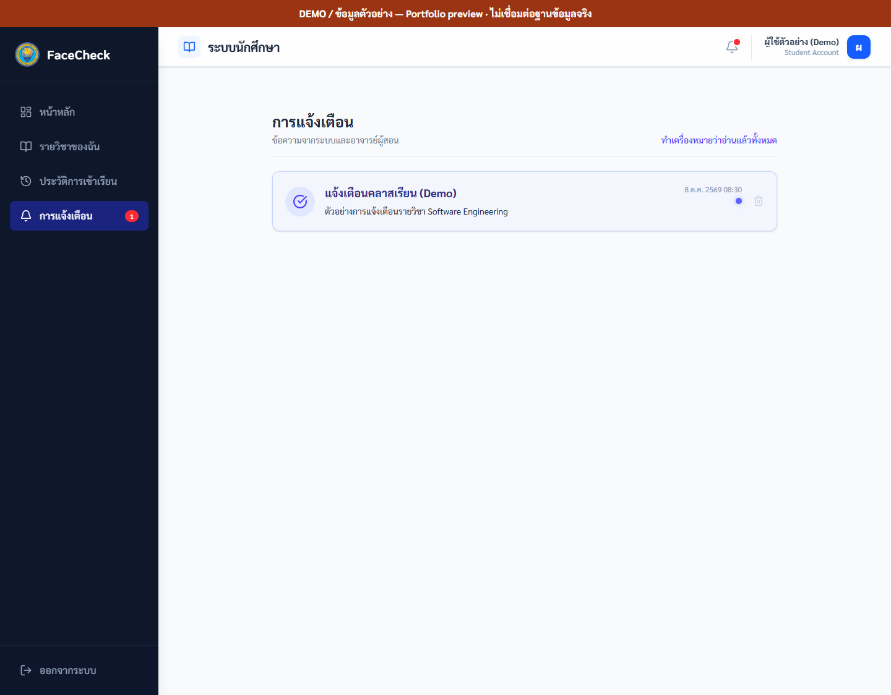
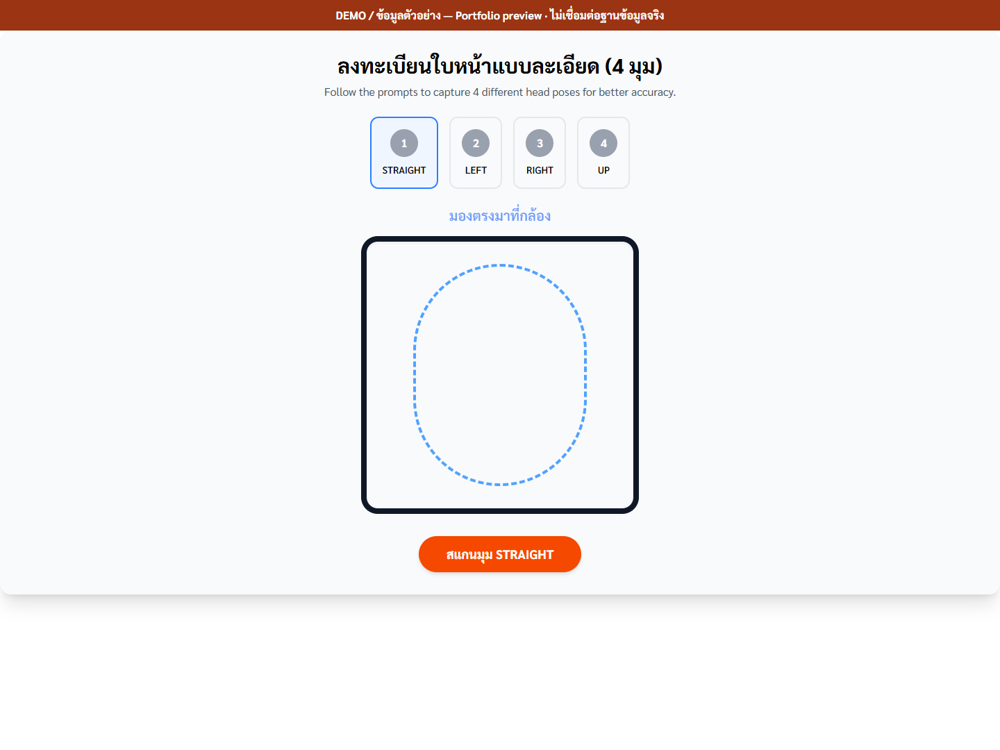
Teacher · อาจารย์
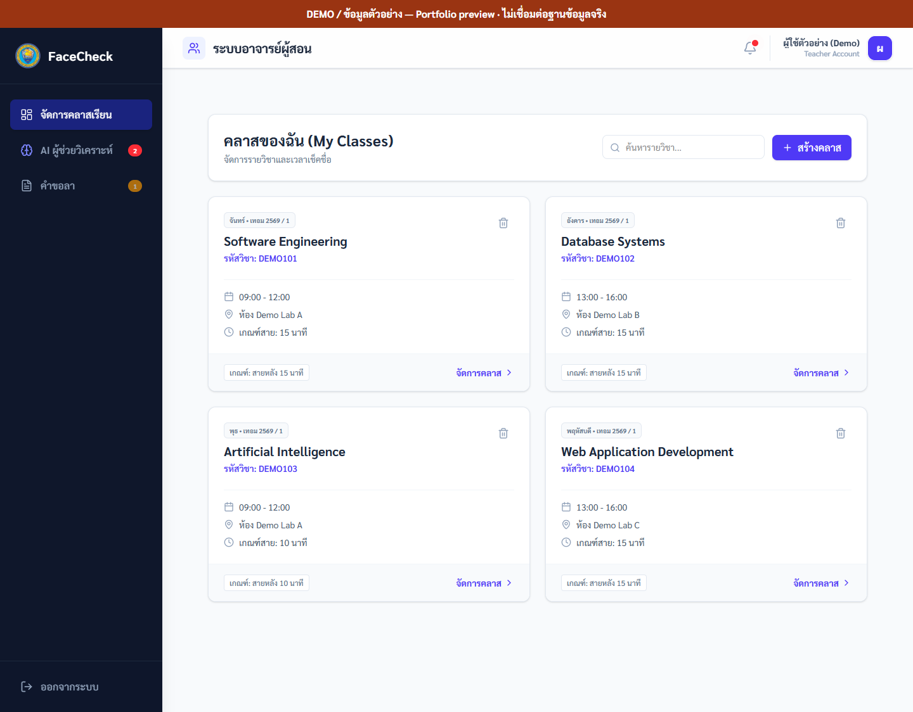
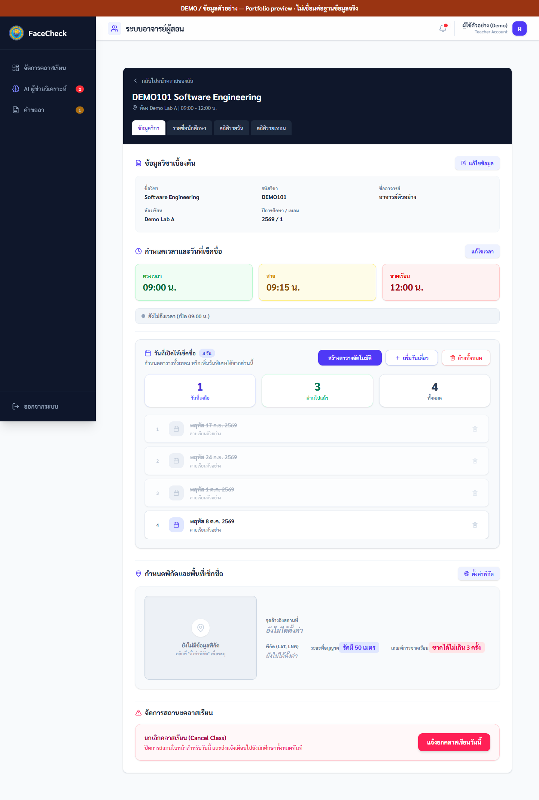
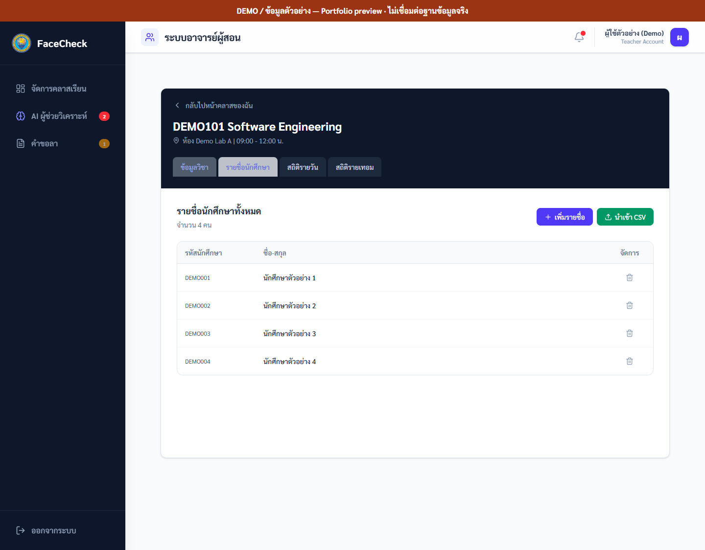
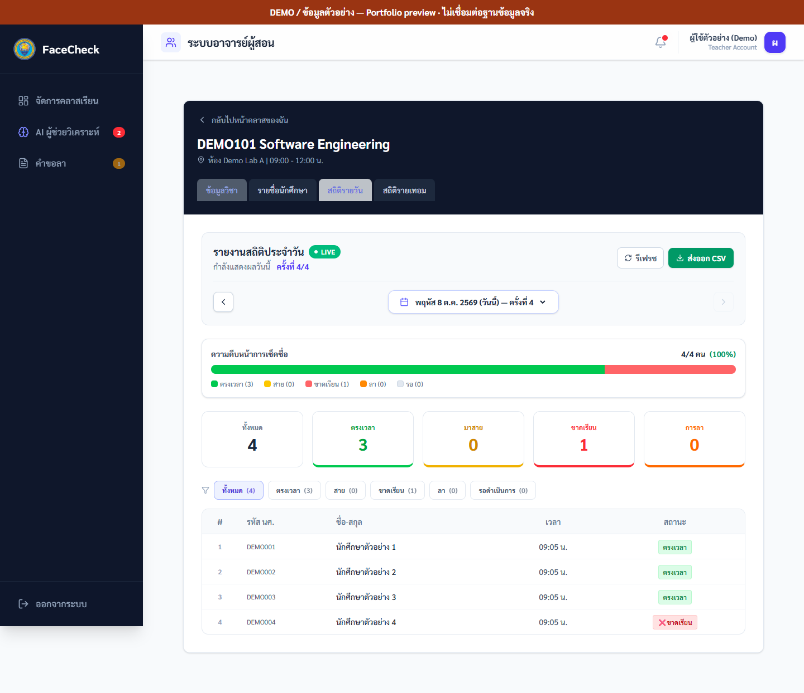
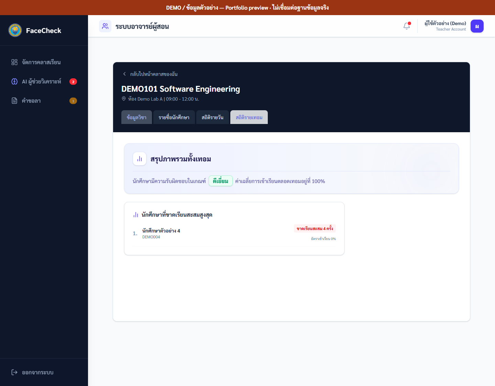
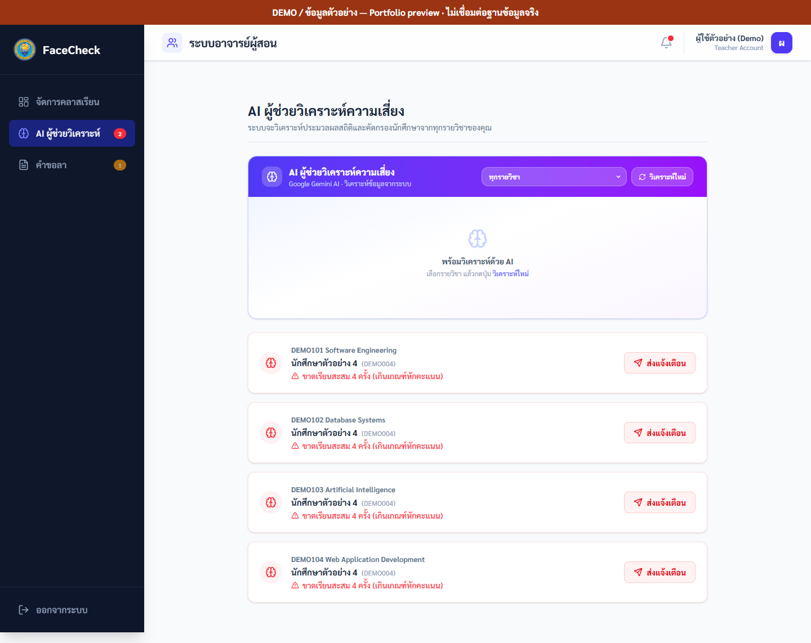
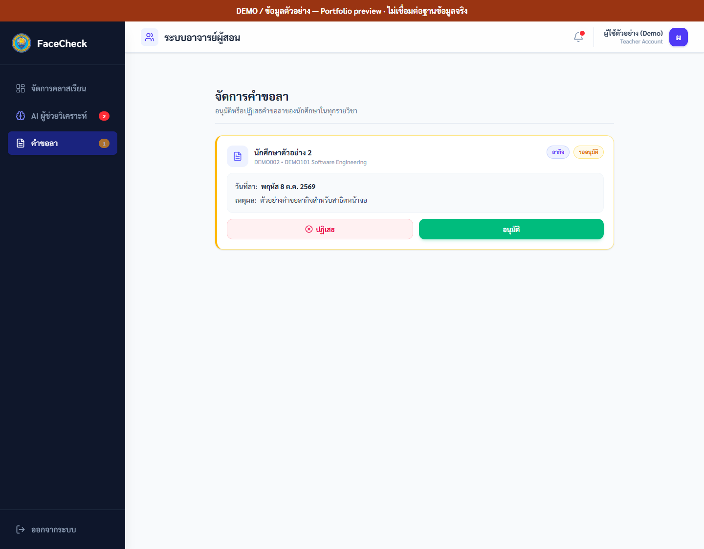